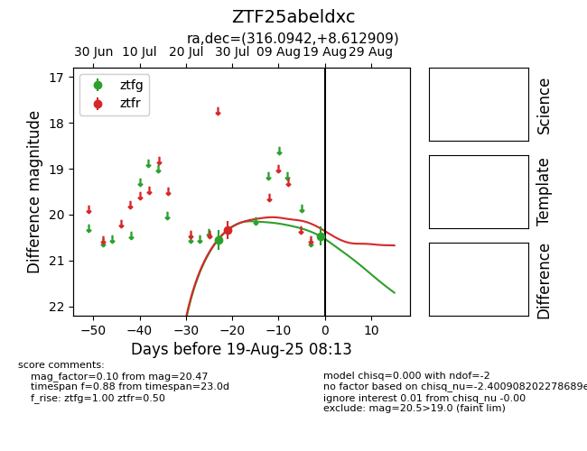

Target ZTF25abeldxc at 2025-08-19 08:13, see:
FINK: fink-portal.org/ZTF25abeldxc
Lasair: lasair-ztf.lsst.ac.uk/objects/ZTF25abeldxc
ALeRCE: alerce.online/object/ZTF25abeldxc
alt names
ZTF25abeldxc (ztf,fink)
coordinates:
equatorial (ra, dec) = (316.0942,+8.61291)
galactic (l, b) = (57.6318,-24.45557)
photometry
last ztfg=20.47, ztfr=20.34
2 ztfg, 1 ztfr detections
